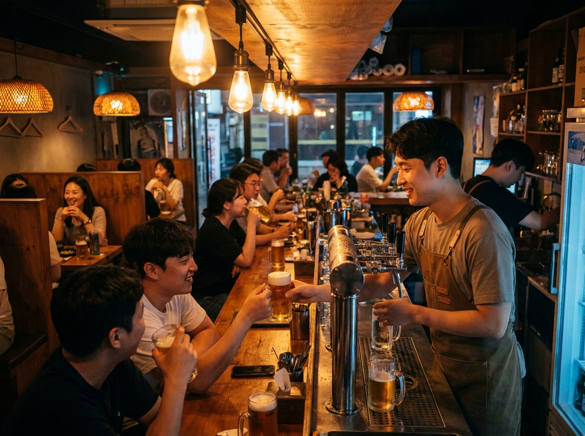
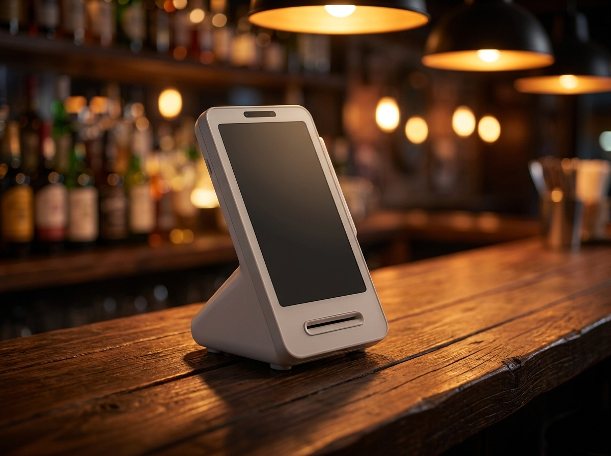
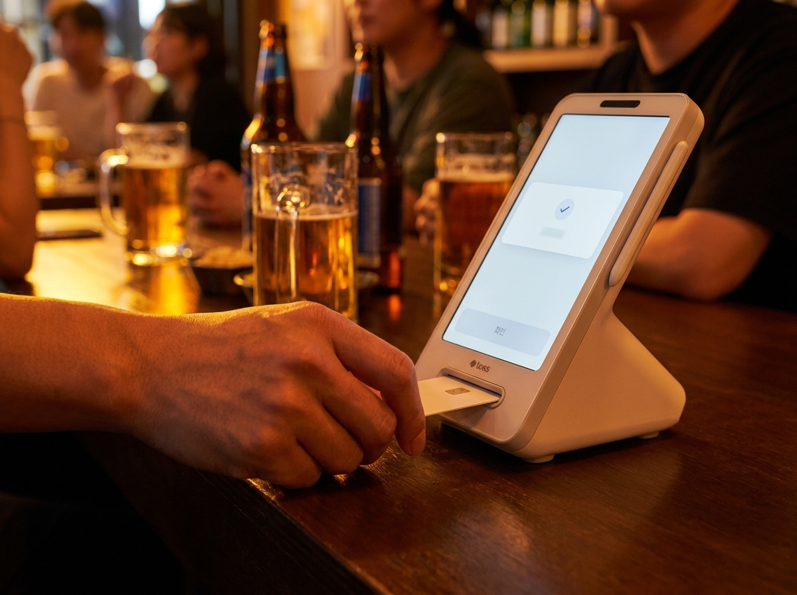

카드 결제가 갑자기 안 될 때, 손님 앞에서 30초 안에 확인할 순서
결론부터 말씀드리면, 장사 중에 결제가 막히는 상황은 대부분 기기 고장이 아닙니다. 통신이 잠깐 끊겼거나, 전원 어댑터가 헐거워졌거나, 영수증 용지가 다 떨어졌거나, 카드 리더 접촉이 미끄러진 경우가 훨씬 많습니다. 그래서 사장님이 손님 앞에서 30초만 순서대로 확인하면 그 자리에서 풀리는 일이 적지 않습니다. 누리네트웍스는 수도권 매장을 직접 방문해 설치하고 관리하는 포스·결제단말 전문 업체입니다. 현장에서 "단말기가 죽었다"는 다급한 연락을 받고 가 보면, 실제로 기기를 바꿔야 했던 경우보다 몇 가지 확인만으로 정상화된 경우가 더 많았습니다. 이 글에서는 결제가 안 될 때 직접 확인할 순서, 그래도 안 될 때 손님을 붙잡아 두는 임시 대응, A/S를 부를 때 미리 준비하면 빨라지는 정보를 정리했습니다.

고장보다 무서운 건 대처를 몰라 손님을 돌려보내는 것입니다
밤 아홉 시, 테이블이 꽉 찬 호프집을 떠올려 보시면 이해가 빠릅니다. 계산하러 나온 손님이 카드를 내미는데 단말기 화면이 멈춰 있습니다. 뒤에는 계산을 기다리는 손님이 두세 팀 더 서 있습니다. 이때 사장님이 무엇을 확인해야 할지 모르면, 그 자리에서 할 수 있는 말은 "죄송한데 카드가 안 되네요"뿐입니다.
문제는 그다음입니다. 손님은 현금이 없으면 그냥 나가고, 계좌이체를 부탁하면 서로 번거로워집니다. 기다리던 다른 손님도 덩달아 불안해집니다. 매출 한 건을 놓치는 것보다, 우리 가게가 준비되지 않은 곳으로 기억되는 쪽이 더 아픕니다. 고장 자체보다 무서운 건 대처를 몰라 손님을 돌려보내는 것입니다.
반대로 사장님이 침착하게 "잠시만요, 확인해 볼게요"라고 말하고 순서대로 손을 움직이면 분위기가 달라집니다. 대부분은 그 30초 안에 해결되고, 해결되지 않더라도 손님은 대응하고 있다는 사실을 눈으로 봅니다. 이 차이가 재방문을 가릅니다.
30초 안에 직접 확인하는 다섯 가지
당황하면 순서가 엉킵니다. 아래 순서대로만 손을 움직이시면 됩니다. 계산대 옆에 붙여 두시면 알바 직원도 같은 순서로 대응할 수 있습니다.
| 순서 | 확인할 것 | 흔한 원인 |
|---|---|---|
| 1 | 전원 | 어댑터 헐거움, 멀티탭 스위치 꺼짐, 배터리 방전 |
| 2 | 랜선·와이파이 | 공유기 재시작 직후, 랜선 빠짐, 비밀번호 변경 |
| 3 | 신호 표시 | 화면 상단 통신 아이콘이 끊겨 있는지 확인 |
| 4 | 재부팅 | 전원을 껐다가 잠시 후 다시 켜기 |
| 5 | 영수증 용지 | 용지 소진·거꾸로 끼움으로 출력 단계에서 멈춤 |
가장 흔한 것은 1번과 2번입니다. 바 카운터는 컵과 병이 오가는 자리라 어댑터가 슬쩍 빠지는 일이 잦고, 멀티탭 스위치가 눌려 꺼지기도 합니다. 인터넷은 공유기를 껐다 켠 직후나 통신사 점검 시간대에 잠깐 불안정해집니다. 3번 신호 표시는 화면 위쪽 아이콘만 보면 되므로 확인이 가장 빠릅니다.
4번 재부팅은 순서상 뒤에 두는 편이 좋습니다. 전원과 통신을 확인하지 않고 무작정 껐다 켜면 원인을 모른 채 같은 상황이 반복되기 때문입니다. 5번 용지는 의외로 자주 겪는 경우인데, 결제 승인은 정상적으로 끝났는데 영수증만 안 나오는 상태를 고장으로 오해하기 쉽습니다. 승인 여부를 먼저 확인하는 습관이 중요한 이유입니다.

그래도 안 될 때, 손님을 붙잡아 두는 방법
다섯 가지를 확인해도 결제가 되지 않으면, 그때는 손님을 어떻게 응대하느냐가 남습니다. 먼저 상황을 짧게 설명하고 대안을 제시하는 것이 좋습니다. 다른 결제 수단이 되는지, 예비 단말이 있는지, 간편결제로 돌릴 수 있는지 순서로 안내하면 손님이 기다려 줄 여지가 생깁니다.
여기서 가장 조심할 부분이 중복 결제입니다. 화면이 멈췄다고 해서 같은 결제를 여러 번 시도하면, 실제로는 승인이 올라갔는데 화면에만 표시되지 않았을 수 있습니다. 그래서 다시 긁기 전에 승인 내역부터 확인하셔야 합니다. 토스단말기는 앱에서 결제 내역을 바로 볼 수 있어, 방금 그 건이 승인됐는지 그 자리에서 판단할 수 있습니다. 손님에게도 화면을 보여 드리며 설명할 수 있어 실랑이가 줄어듭니다.
중복 결제가 확인되면 취소 처리를 진행하시면 됩니다. 다만 승인취소가 반영되는 시점과 카드 대금에 표시되는 방식은 카드사와 VAN 처리 상황에 따라 달라집니다. 며칠 안에 처리된다고 손님께 단정해서 말씀하시기보다, 취소 접수 사실과 카드사 확인 방법을 함께 안내하시는 편이 안전합니다. 장애 원인과 처리 절차 역시 통신 환경과 카드사 사정에 따라 달라질 수 있으니, 같은 증상이 반복된다면 설치 업체나 카드사 고객센터에 확인하시길 권합니다.
A/S를 부를 때 미리 준비하면 빨라집니다
전화를 걸어 "안 돼요"라고만 말씀하시면, 상담원은 상황을 파악하기 위해 처음부터 되짚어야 합니다. 아래 네 가지를 미리 적어 두시면 통화 시간이 눈에 띄게 줄어듭니다.
첫째, 가맹점번호 또는 상호와 사업자번호입니다. 어느 매장인지 즉시 확인되면 그다음 절차가 빨라집니다. 둘째, 단말기가 놓인 위치와 연결 방식입니다. 바 카운터에 랜선으로 연결돼 있는지, 무선으로 쓰고 있는지에 따라 점검 방향이 갈립니다. 셋째, 증상입니다. 화면이 아예 안 켜지는지, 켜지는데 승인이 안 떨어지는지, 영수증만 안 나오는지는 전혀 다른 문제입니다. 넷째, 발생 시각입니다. 정전이나 공유기 교체, 인터넷 공사 같은 사건과 겹치는지 확인하는 단서가 됩니다.
여기에 하나 더 말씀드리면, 파는 곳과 고쳐 주는 곳이 같은지가 실제 체감을 크게 좌우합니다. 누리네트웍스는 정품 신제품 보증과 수도권 직영 설치·관리를 원칙으로 합니다. 설치한 사람이 매장 구조와 연결 방식을 이미 알고 있으니, 증상만 들어도 짚어야 할 지점이 좁혀집니다. 다만 방문 소요 시간과 처리 방식은 지역과 상황에 따라 다르므로 상담 시 안내해 드립니다.
토스단말기는 이런 상황에서 사장님이 직접 확인하기 쉬운 구조라는 점이 장점입니다. 크기가 작아 바 카운터 위에서 연결 상태를 눈으로 바로 확인할 수 있고, 카드와 여러 간편결제를 한 대로 받기 때문에 손님이 어떤 방법을 내밀어도 응대가 됩니다. 매출과 결제 내역은 앱에서 확인할 수 있어, 문제가 생긴 순간에 판단 근거를 손에 쥘 수 있습니다. 약정 없이 월 0원으로 시작할 수 있다는 점도 부담을 덜어 줍니다.

자주 묻는 질문(FAQ)
Q. 결제가 안 될 때 제일 먼저 무엇을 봐야 하나요?
전원과 통신입니다. 어댑터와 멀티탭 스위치를 먼저 확인하고, 그다음 랜선 연결이나 와이파이 상태, 화면 위쪽 신호 표시를 보시면 됩니다. 이 두 가지에서 걸리는 경우가 가장 많습니다.
Q. 같은 결제를 여러 번 시도해도 되나요?
권하지 않습니다. 화면에 표시되지 않았을 뿐 승인은 올라갔을 수 있습니다. 다시 시도하기 전에 결제 내역에서 승인 여부를 먼저 확인하시고, 중복이 확인되면 취소 절차를 진행하시면 됩니다. 다만 취소가 반영되는 시점은 카드사·VAN 처리 상황에 따라 달라집니다.
Q. A/S를 부르면 얼마나 걸리나요?
지역과 증상, 시간대에 따라 다르기 때문에 일률적으로 말씀드리기 어렵습니다. 매장 위치와 증상을 알려 주시면 상담 시 안내해 드립니다. 가맹점번호와 발생 시각을 미리 준비해 두시면 확인이 빨라집니다.
Q. 밤늦게 문제가 생기면 어떻게 하나요?
우선 위의 다섯 가지를 확인하시고, 해결되지 않으면 그날의 응대 방법을 정해 두시는 편이 좋습니다. 다음 날 연락 주실 때 언제 어떤 증상이 있었는지 함께 알려 주시면 원인을 찾기 쉽습니다.
결제가 멈추는 순간에도 장사는 이어져야 합니다
단말기는 언젠가 한 번은 말을 듣지 않습니다. 중요한 것은 그때 사장님이 무엇을 해야 할지 알고 있느냐입니다. 순서를 알고 있으면 30초 안에 끝나고, 모르면 손님을 돌려보내게 됩니다. 지금 쓰시는 단말이 자주 멈추거나 매장 통신 환경이 불안하다면, 어떤 증상이 언제 생기는지 알려 주세요. 매장 상황에 맞는 구성과 관리 방법을 함께 찾아 드리겠습니다. 수도권은 직접 방문해 설치하고 관리해 드리니 부담 없이 문의 주세요.
- 📞 전화상담 1544-7754
- 🌐 홈페이지 https://nwpos.co.kr

📷 인스타그램 팔로우 https://www.instagram.com/nurinetworkspos

▶️ 유튜브 구독 https://www.youtube.com/@nurinetworks